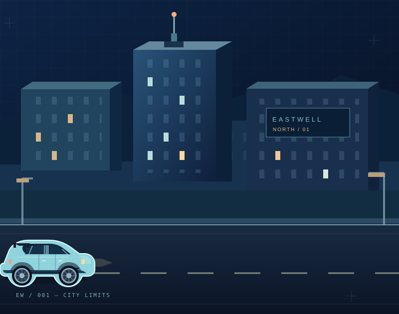

На колёсах
Транспорт с проработанной физикой: едь по дорогам города, маневрируй и привыкай к поведению своей машины.
Садись за руль. Устраивайся на работу. Исследуй город, знакомься с людьми. В Eastwell никто не решает за тебя, какой будет твоя история.

Кто-то едет на работу, кто-то патрулирует улицы, кто-то просто исследует район. Eastwell — Minecraft-песочница, в которой RP появляется из действий самих игроков.
Транспорт с проработанной физикой: едь по дорогам города, маневрируй и привыкай к поведению своей машины.
Городские профессии и взаимодействия: полиция, врачи и другие роли делают мир живым.
Не хочешь строгий RP? И не нужно. Общайся, исследуй и находи собственные занятия.
Подключение будет доступно на Java и Bedrock. Когда адреса и поддерживаемые версии будут объявлены, они появятся здесь.
СкороПараметры подключения будут опубликованы перед открытием сервера.
СкороСкороПараметры подключения будут опубликованы перед открытием сервера.
Готовим отдельный раздел с наборами поддержки. Пока можно посмотреть, как будет выглядеть будущий магазин.